Nesse post vamos realizar uma análise exploratória de dados, utilizando o pacote DataExplorer
A análise exploratória de dados (AED) é uma abordagem à análise de conjuntos de dados de modo a resumir suas características principais, frequentemente com métodos visuais. Seu objetivo é obter uma compreensão inicial dos dados, identificando padrões, tendências e outliers.
A AED é uma etapa importante de qualquer análise de dados, pois fornece uma base sólida para o desenvolvimento de hipóteses e a aplicação de técnicas estatísticas mais sofisticadas. Ela pode ser usada em uma ampla variedade de aplicações, incluindo pesquisa científica, negócios, governo e saúde.
A análise exploratória de dados é importante por vários motivos:
Ela ajuda a entender os dados. A AED permite que os pesquisadores e analistas identifiquem padrões, tendências e outliers nos dados. Isso pode fornecer insights valiosos sobre o que os dados representam e como eles podem ser usados. Ela ajuda a identificar problemas nos dados. A AED pode ajudar a identificar problemas comuns nos dados, como valores ausentes, outliers e dados incorretos. Isso é importante para garantir que os dados sejam confiáveis e que as análises sejam válidas. Ela ajuda a gerar hipóteses. A AED pode ajudar os pesquisadores a gerar hipóteses sobre os dados. Essas hipóteses podem ser testadas com técnicas estatísticas mais sofisticadas. Exemplo de análise exploratória de dados
Para ilustrar como a análise exploratória de dados pode ser feita, vamos usar o pacote dataExplorer do R para analisar o conjunto de dados nycflights13. Este conjunto de dados contém dados de pontualidade de companhias aéreas para todos os voos que partiram de Nova York em 2013. Inclui também ‘metadados’ úteis sobre companhias aéreas, aeroportos, clima e aviões.
#Instalando o pacote que contém os dados
# install.packages("nycflights13")
#Carregando o pacote
library(nycflights13)Há 5 conjuntos de dados neste pacote:
Companhias aéreas (airlines)
Aeroportos (airports)
Voos (flights)
Aviões (planes)
Clima (weather)
#Carregando o pacote DataExplorer. Para instalar -> install.packages("DataExplorer")
library(DataExplorer)Agora, vamos juntar todas as tabelas para criar um novo conjunto de dados
merge_airlines <- merge(flights, airlines, by = "carrier", all.x = TRUE)
merge_planes <- merge(merge_airlines, planes, by = "tailnum", all.x = TRUE, suffixes = c("_flights", "_planes"))
merge_airports_origin <- merge(merge_planes, airports, by.x = "origin", by.y = "faa", all.x = TRUE, suffixes = c("_carrier", "_origin"))
dados <- merge(merge_airports_origin, airports, by.x = "dest", by.y = "faa", all.x = TRUE, suffixes = c("_origin", "_dest"))Para dar a primeira olhada nos nossos dados, podemos usar a função “introduce”
introduce(dados) rows columns discrete_columns continuous_columns
1 336776 42 16 26
all_missing_columns total_missing_values complete_rows
1 0 809170 906
total_observations memory_usage
1 14144592 97254656Para visualizar as informações acima, com uma pequena análise, utilizamos “plot_intro”
plot_intro(dados)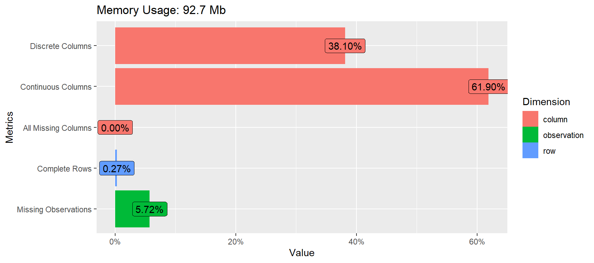
Você deve notar algumas surpresas:
Apenas 0,3% das linhas estão completamente preenchidas! Isso significa que 99,7% das linhas possuem pelo menos um valor faltante.
Apesar disso, o total de observações faltantes é de apenas 5,7%. Isso indica que a maioria das linhas possui apenas alguns valores faltantes.
Os valores faltantes estão definitivamente criando problemas. Precisamos investigar e tratar esses valores para realizar uma análise adequada dos dados. Vamos dar uma olhada nos dados faltantes para entender melhor a situação.
Dados do mundo real são bagunçados, e você pode simplesmente usar a função “plot_missing” para visualizar o perfil de valores ausentes para cada variável.
plot_missing(dados)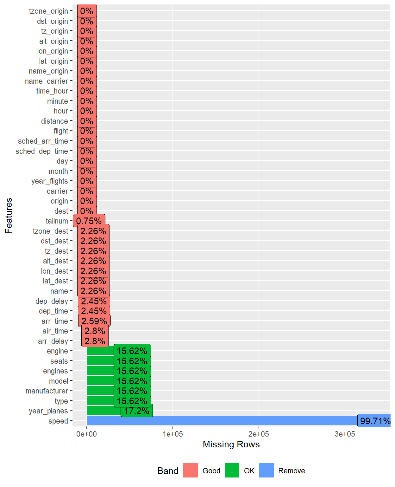
A partir do gráfico, a variável ‘speed’ está quase totalmente ausente e provavelmente não é informativa. Parece que encontramos o culpado pelas 0,3% de linhas completas. Vamos excluí-lo:
dados <- drop_columns(dados, "speed")Visualizando distribuições de frequência para todas as variáveis discretas:
Após uma inspeção mais detalhada da variável ‘manufacturer’, não é difícil identificar as seguintes duplicações:
Vamos limpar e olhar a distribuição da variável ‘manufacturer’ de novo:
dados[which(dados$manufacturer == "AIRBUS INDUSTRIE"),]$manufacturer <- "AIRBUS"
dados[which(dados$manufacturer == "CANADAIR LTD"),]$manufacturer <- "CANADAIR"
dados[which(dados$manufacturer %in% c("MCDONNELL DOUGLAS AIRCRAFT CO", "MCDONNELL DOUGLAS CORPORATION")),]$manufacturer <- "MCDONNELL DOUGLAS"
plot_bar(dados$manufacturer)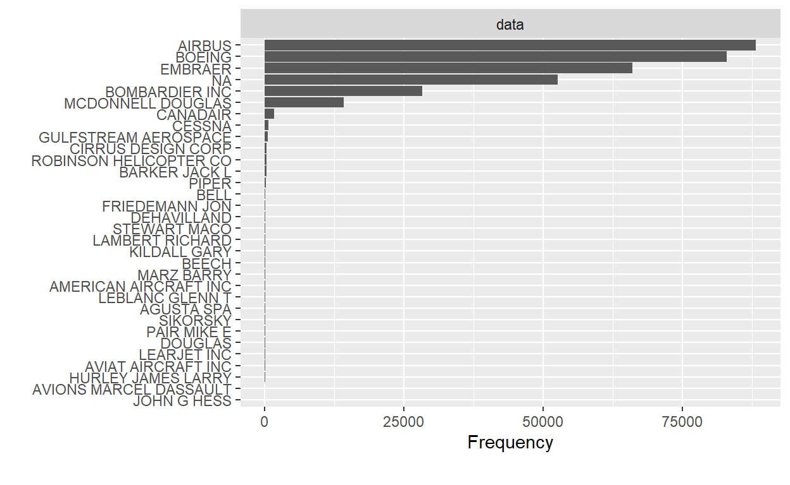
Ok,tudo certo com a variável ‘manufacturer’.
As colunas dst_origin, tzone_origin, year_flights e tz_origin contém somente 1 valor, então vamos retirá-las também
dados <- drop_columns(dados, c("dst_origin", "tzone_origin", "year_flights", "tz_origin"))Muitas vezes, é muito útil olhar para a distribuição de frequência bivariada. Isso permite que você explore como duas variáveis se relacionam entre si e identifique possíveis padrões ou correlações. Por exemplo, podemos olhar para a distribuição de frequência das variáveis discretas em relação ao “arr_delay”. Isso nos ajudará a entender como essas variáveis influenciam o atraso de chegada dos voos e vice-versa.
plot_bar(dados, with = "arr_delay")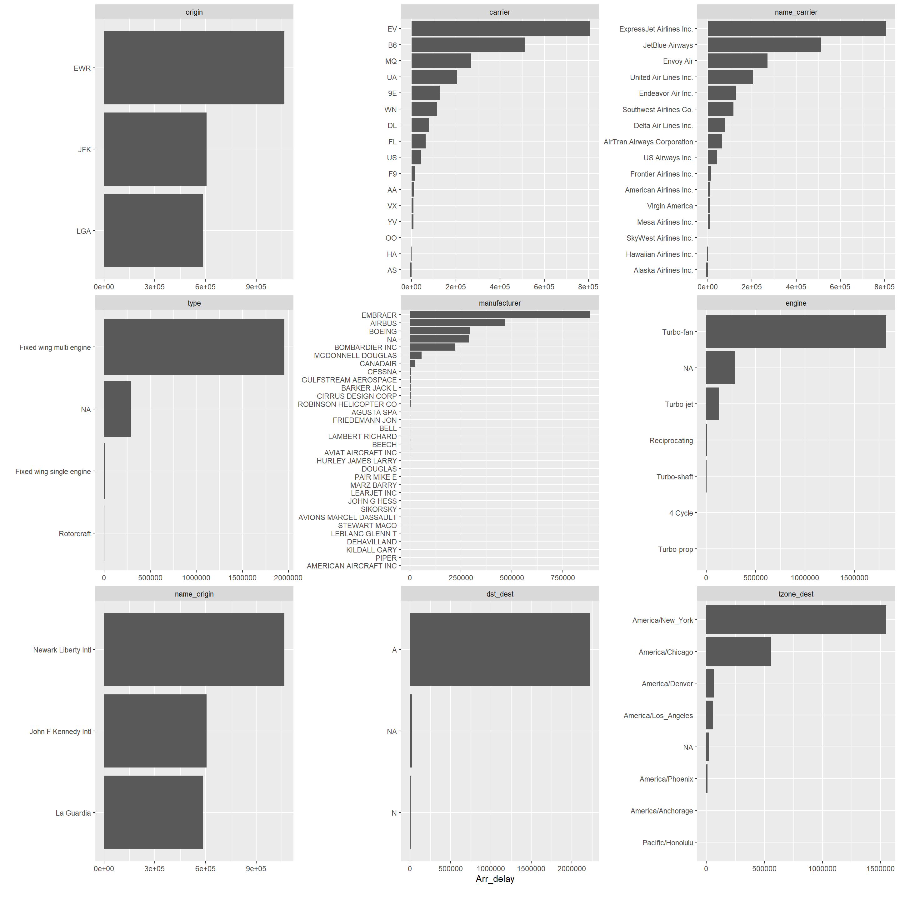
A distribuição resultante parece bastante diferente da distribuição de frequência regular. Você pode optar por desmembrar todas as frequências por uma variável discreta:
plot_bar(dados, by = "origin")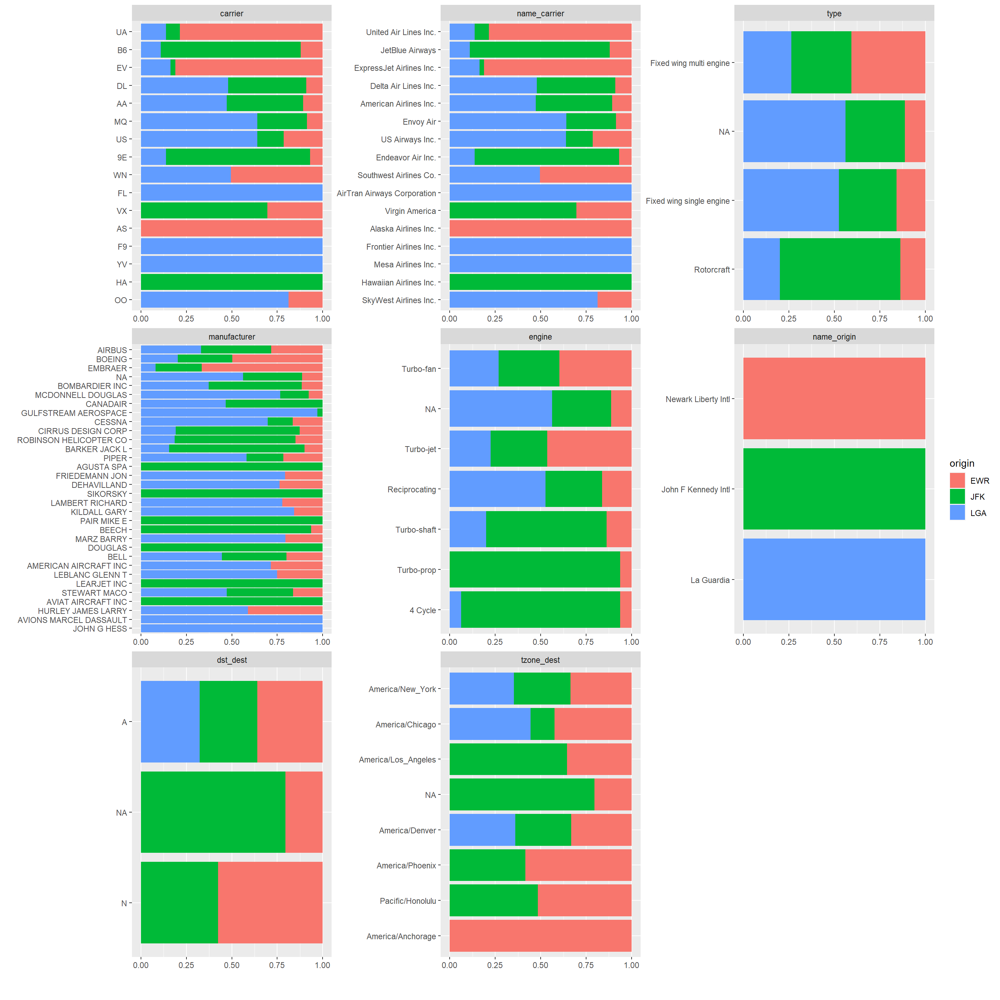
Visualizando distribuições para todas as variáveis contínuas:
À primeira vista, podemos observar que existem variáveis de data e hora que precisam ser tratadas posteriormente. Por exemplo, podemos concatenar ano, mês e dia para formar a data ou adicionar hora e minuto para formar a data e hora.
Embora este exemplo não se aprofunde em tarefas analíticas, devemos tratar as seguintes features com base nas informações fornecidas pelos histogramas:
dados <- update_columns(dados, "flight", as.factor)dados <- drop_columns(dados, c("year_flights", "tz_origin"))O gráfico Q-Q (Quantile-Quantile) é uma forma de visualizar o desvio de uma distribuição de probabilidade específica. Depois de analisar esses gráficos, muitas vezes é benéfico aplicar uma transformação matemática (como logaritmo) para modelos como a regressão linear. Para fazer isso, podemos usar a função plot_qq. Por padrão, ela compara os dados com uma distribuição normal.
Nota: A função pode levar muito tempo com muitas observações, então você pode especificar um valor apropriado para o parâmetro ‘sampled_rows’.
qq_data <- dados[, c("arr_delay", "air_time", "distance", "seats")]
plot_qq(qq_data, sampled_rows = 1000)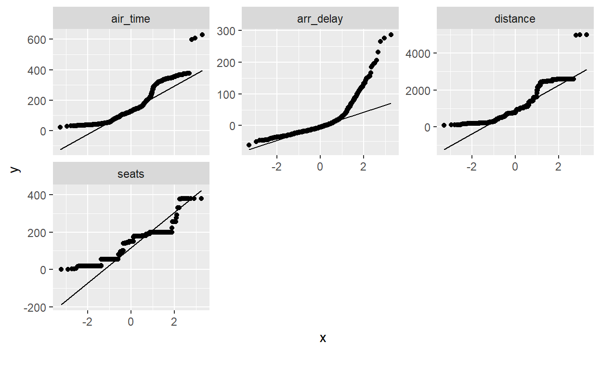
Com base no gráfico, as variáveis ‘air_time’, ‘distance’ e ‘seats’ parecem apresentar assimetria em ambas as extremidades (caudas). Para resolver isso, vamos aplicar uma transformação logarítmica simples e plotá-las novamente.
Esta transformação ajudará a normalizar a distribuição dessas variáveis, tornando-as mais adequadas para análise estatística e modelagem. O logaritmo comprimirá os valores extremos, reduzindo a influência que eles têm na análise.
Depois de aplicar a transformação, vamos plotar novamente as variáveis para verificar se a assimetria foi corrigida. Isso nos ajudará a determinar se a transformação foi eficaz e se podemos continuar com a análise dos dados.
log_qq_data <- update_columns(data = qq_data, ind = 2:4, what = function(x) log(x + 1))
plot_qq(log_qq_data[, 2:4], sampled_rows = 1000L)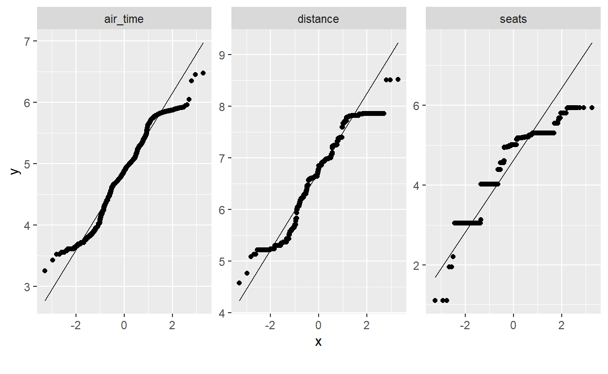
A distribuição agora parece melhor! Se necessário, você também pode visualizar o gráfico Q-Q em relação a outra variável:
qq_data <- dados[, c("name_origin", "arr_delay", "air_time", "distance", "seats")]
plot_qq(qq_data, by = "name_origin", sampled_rows = 1000L)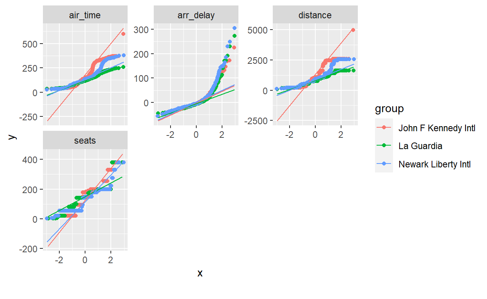
Para visualizar a matriz de correlação de todas as variáveis sem valores ausentes:
#estamos ignorando variaveis que contenham mais de 5 categorias
plot_correlation(na.omit(dados), maxcat = 5L)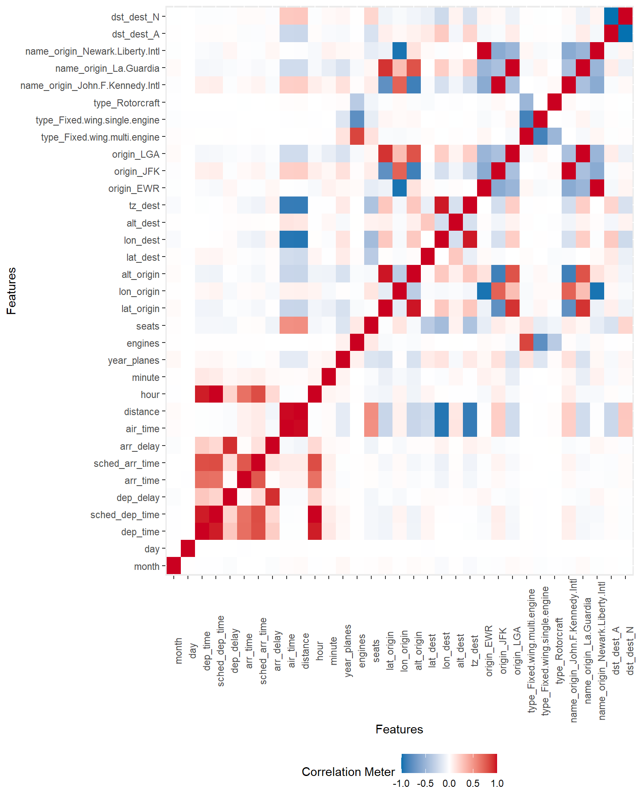
Embora você possa sempre executar plot_prcomp(na.omit(dados)) diretamente, a PCA funciona melhor com dados mais limpos. Para realizar e visualizar a PCA em algumas variáveis selecionadas:
pca_df <- na.omit(dados[, c("origin", "dep_delay", "arr_delay", "air_time", "year_planes", "seats")])
plot_prcomp(pca_df, variance_cap = 0.9, nrow = 2L, ncol = 2L)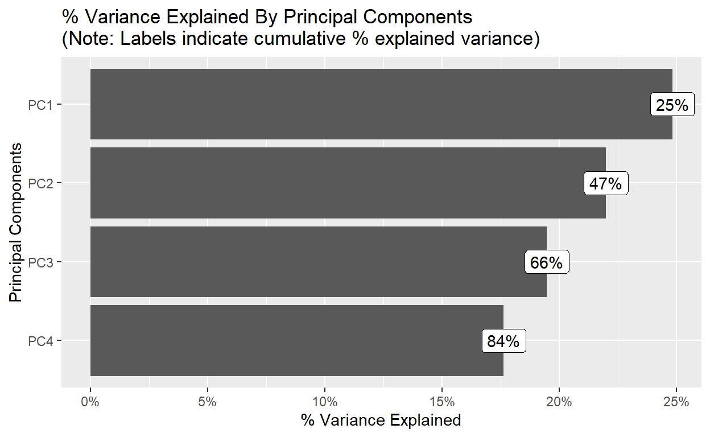
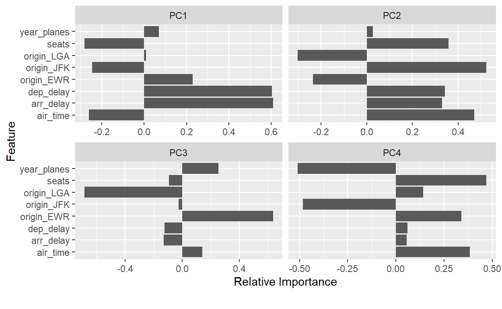
Suponha que você deseja construir um modelo para prever o atraso de chegada, é possível visualizar a distribuição de todas as variáveis contínuas com base no atraso de chegada usando um boxplot:
## selecionar apenas algumas variáveis
arr_delay_df <- dados[, c("arr_delay", "month", "day", "hour", "minute", "dep_delay", "distance", "year_planes", "seats")]
## Call boxplot function
plot_boxplot(arr_delay_df, by = "arr_delay")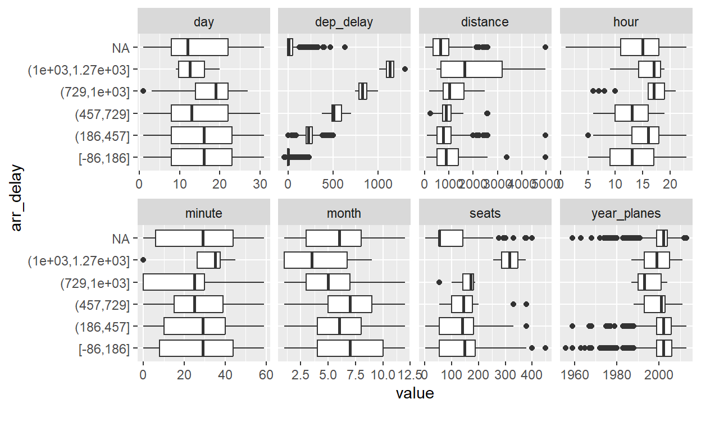
Entre todas as mudanças sutis na correlação com os atrasos de chegada, você pode perceber imediatamente que aviões com mais de 300 assentos tendem a ter atrasos muito maiores (16 a 21 horas). Agora você pode se aprofundar ainda mais para verificar ou gerar mais hipóteses.
arr_delay_df2 <- dados[, c("arr_delay", "dep_time", "dep_delay", "arr_time", "air_time", "distance", "year_planes", "seats")]
plot_scatterplot(arr_delay_df2, by = "arr_delay", sampled_rows = 1000L)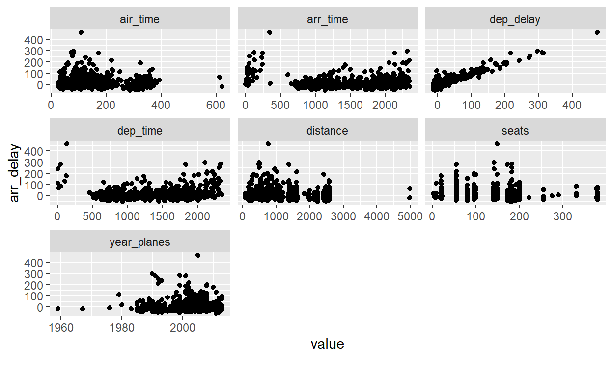
É o processo de criar novas variáveis a partir de dados existentes.
Valores ausentes podem ter significados para uma variável. Além dos métodos de imputação, também podemos substituí-los por alguns valores lógicos. Por exemplo, para variáveis discretas, podemos querer agrupar os valores faltantes em uma nova categoria. Para variáveis contínuas, podemos querer definir os valores faltantes como um número conhecido com base no conhecimento existente.
No DataExplorer, isso pode ser feito pela função set_missing. A função identifica automaticamente o tipo de variável (discreta ou contínua) com base no argumento fornecido. Se você especificar um número, todos os valores faltantes de variáveis contínuas serão substituídos por esse número. Se você especificar uma string, todos os valores faltantes de variáveis discretas serão substituídos por essa string. Se você fornecer ambos, os valores faltantes de ambos os tipos serão substituídos.
final_df <- set_missing(dados, list(0L, "unknown"))
plot_missing(final_df)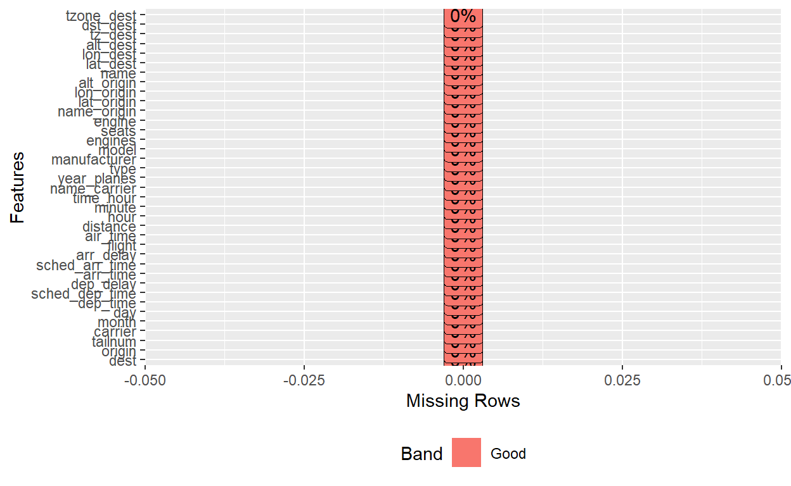
A partir dos gráficos de barras anteriores, observamos um certo número de variávei discretas com distribuições categóricas esparsas. Às vezes, queremos agrupar categorias de baixa frequência em um novo grupo ou reduzir o número de categorias para uma faixa razoável. A função group_category fará isso.
Tome a variável “fabricante” como exemplo. Suponha que queremos agrupar em outra categoria. Podemos tentar primeiro com os 20% inferiores (por contagem):
group_category(data = dados, feature = "manufacturer", threshold = 0.2) manufacturer cnt pct cum_pct
1 AIRBUS 88193 0.2618744 0.2618744
2 BOEING 82912 0.2461933 0.5080677
3 EMBRAER 66068 0.1961779 0.7042456Como podemos ver, o ‘manufacturer’ será reduzido a 4 categorias, ou seja, AIRBUS, BOEING, EMBRAER e OUTROS. Se você concordar com esse limite, pode especificar ‘update = TRUE’ para atualizar o conjunto de dados original.
final_df <- group_category(data = dados, feature = "manufacturer", threshold = 0.2, update = TRUE)
plot_bar(final_df$manufacturer)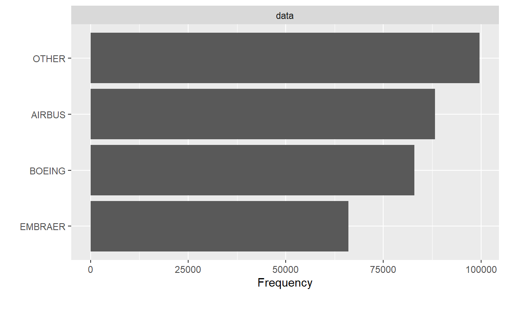
Em vez de reduzir as categorias pela frequência, você também pode agrupar as categorias por outra métrica contínua. Por exemplo, se você deseja agrupar ‘name_carrier’ com os 20% inferiores de distância percorrida, você pode fazer o seguinte:
group_category(data = dados, feature = "name_carrier", threshold = 0.2, measure = "distance") name_carrier cnt pct cum_pct
1 United Air Lines Inc. 89705524 0.2561422 0.2561422
2 Delta Air Lines Inc. 59507317 0.1699153 0.4260575
3 JetBlue Airways 58384137 0.1667082 0.5927657
4 American Airlines Inc. 43864584 0.1252495 0.7180152Da mesma forma, se desejar, você pode adicionar “update = TRUE” para atualizar o conjunto de dados original.
final_df <- group_category(data = dados, feature = "name_carrier", threshold = 0.2, measure = "distance", update = TRUE)
plot_bar(final_df$name_carrier)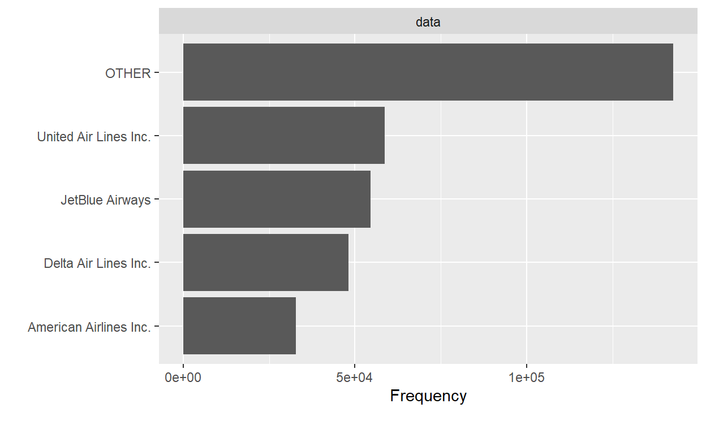
Para transformar os dados em formato binário (para que os algoritmos de ML possam processá-los), a dummificação fará o trabalho. A função preserva a estrutura original dos dados, de modo que apenas características discretas elegíveis serão convertidas para o formato binário
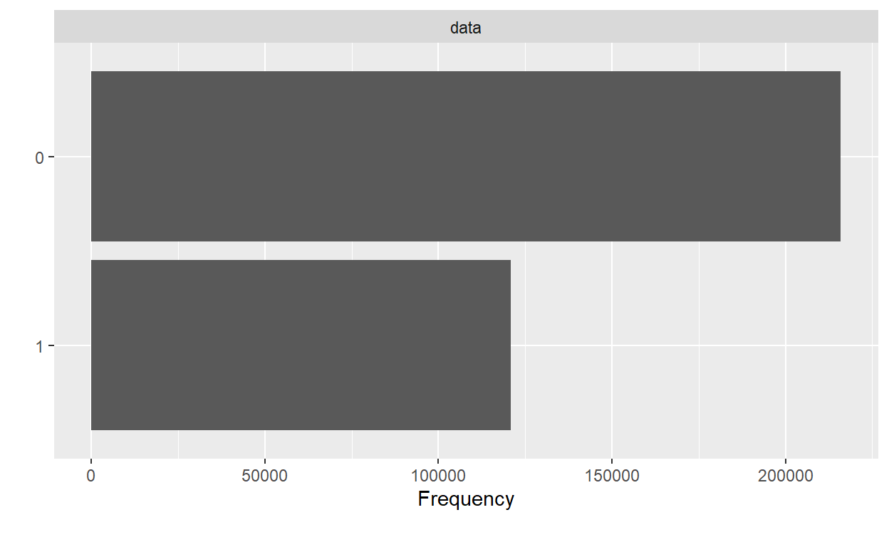
Após visualizar a distribuição das características, é comum querer descartar características que são insignificantes. Por exemplo, características como dst_dest têm principalmente um valor e não fornecem informações valiosas. Você pode usar ‘drop_columns’ para descartar rapidamente essas características. A função aceita nomes ou índices de colunas como parâmetro.
drop_columns(dados, c("dst_dest", "tzone_dest")),Para atualizar rapidamente várias características com o mesmo tratamento, você pode usar ‘update_columns’. Um caso de uso muito comum é definir características para um tipo diferente, por exemplo, de contínuo para discreto. Para configurar rapidamente todas as características relacionadas ao tempo como discreta:
temporal_features <- c("month", "day", "hour", "minute", "tz_dest")
dados <- update_columns(dados, temporal_features, as.factor)
str(dados[, c("month", "day", "hour", "minute", "tz_dest")])'data.frame': 336776 obs. of 5 variables:
$ month : Factor w/ 12 levels "1","2","3","4",..: 5 10 12 5 12 8 7 7 5 8 ...
$ day : Factor w/ 31 levels "1","2","3","4",..: 14 29 19 30 7 25 12 1 15 26 ...
$ hour : Factor w/ 20 levels "1","5","6","7",..: 17 17 17 17 17 17 17 17 17 17 ...
$ minute : Factor w/ 60 levels "0","1","2","3",..: 2 1 2 2 2 8 8 8 2 8 ...
$ tz_dest: Factor w/ 6 levels "-10","-9","-8",..: 4 4 4 4 4 4 4 4 4 4 ...Você também pode usar esta função para transformar características selecionadas com uma função personalizada:
bin_seat <- function(x) cut(x, breaks = c(0L, 50L, 100L, 150L, 200L, 500L))
transformed_data <- update_columns(dados, "seats", bin_seat)
plot_bar(transformed_data$seats)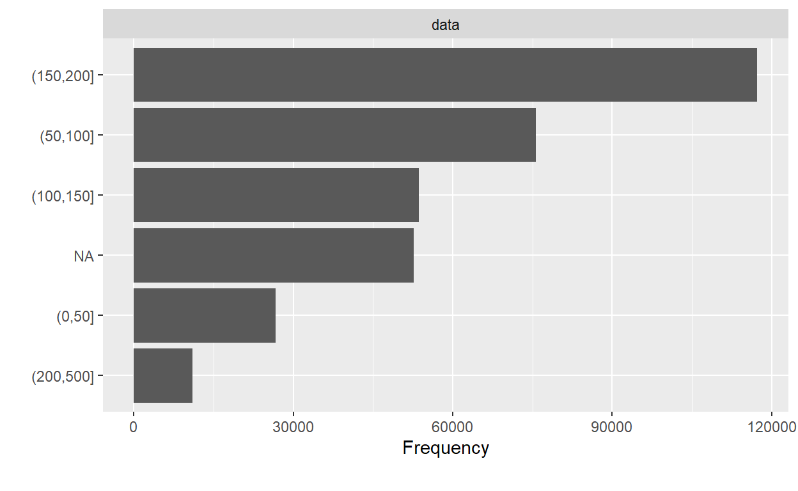
Para organizar todas as estatísticas de dados em um relatório, você pode usar a função ‘create_report’. Ela executará a maioria das funções de Análise Exploratória de Dados (EDA) e gerará um arquivo HTML
create_report(dados)Para maximizar o uso desta função, sempre forneça uma variável de resposta (se aplicável) para automatizar diversas análises bivariadas. Por exemplo:
create_report(dados, y = "arr_delay")Você também pode personalizar cada seção individual usando a função ‘configure_report’. Ela retorna todos os argumentos especificados em uma lista, que serão passados para do.call para serem invocados. Existem 3 tipos de argumentos nesta função:
configure_report(
add_plot_str = FALSE,
add_plot_qq = FALSE,
add_plot_prcomp = FALSE,
add_plot_boxplot = FALSE,
add_plot_scatterplot = FALSE,
global_ggtheme = quote(theme_minimal(base_size = 14))
)A saída pode ser passada diretamente para o argumento de configuração em create_report, por exemplo:
config <- configure_report(
add_plot_str = FALSE,
add_plot_qq = FALSE,
add_plot_prcomp = FALSE,
add_plot_boxplot = FALSE,
add_plot_scatterplot = FALSE,
global_ggtheme = quote(theme_minimal(base_size = 14))
)
create_report(dados, config = config)Para configurar o relatório sem usar a função configure_report, você pode editar o modelo abaixo e passá-lo diretamente para o argumento de configuração:
config <- list(
"introduce" = list(),
"plot_intro" = list(),
"plot_str" = list(
"type" = "diagonal",
"fontSize" = 35,
"width" = 1000,
"margin" = list("left" = 350, "right" = 250)
),
"plot_missing" = list(),
"plot_histogram" = list(),
"plot_density" = list(),
"plot_qq" = list(sampled_rows = 1000L),
"plot_bar" = list(),
"plot_correlation" = list("cor_args" = list("use" = "pairwise.complete.obs")),
"plot_prcomp" = list(),
"plot_boxplot" = list(),
"plot_scatterplot" = list(sampled_rows = 1000L)
)
create_report(dados, config = config)Berry, M. J., & Linoff, G. S. (2000). Data mining techniques: for marketing, sales, and customer relationship management (2a ed.). New York: John Wiley & Sons.
Hastie, T., Tibshirani, R., & Friedman, J. (2009). The elements of statistical learning (2a ed.). New York: Springer.
Hand, D. J., Heywood, F., & Cunningham, M. (2001). Exploratory data analysis: a practical guide. London: Chapman & Hall/CRC.
Tukey, J. W. (1977). Exploratory data analysis. Reading, MA: Addison-Wesley.
Witten, I. H., Frank, E., & Hall, M. A. (2011). Data mining: concepts and techniques (3a ed.). New York: Morgan Kaufmann.
Cui, B. (2022, 20 de julho). DataExplorer: Automate data exploration and treatment. GitHub. Disponível em: https://github.com/boxuancui/DataExplorer. Acesso em: 12 de dezembro de 2023.